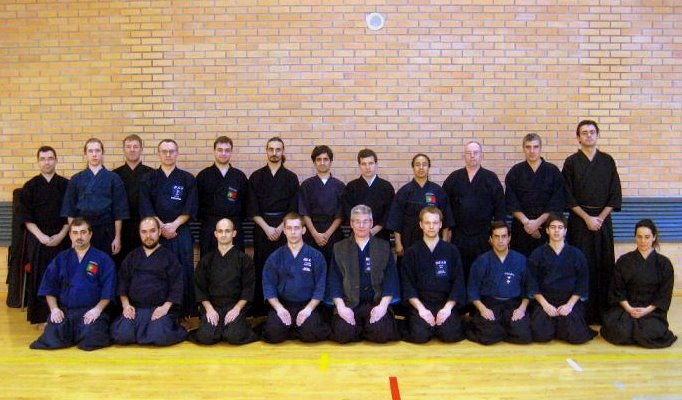

Noticias

2011.10.10
II SEMINÁRIO NACIONAL DE IAIDO DE 2011
Nos próximos dias 22 e 23 de Outubro decorrerá, em Lisboa, o II Seminário Nacional de Iaido de 2011, liderado pelo sensei Chris Mansfield (Iaido 7º Dan Renshi).
Tal como em todos os anteriores estágios, a boa disposição, humor e entusiasmo do sensei Chris irão sem dúvida garantir mais uma fantástica experiência de aprendizagem.
O estágio encontra-se acessível a praticantes de Iaido iniciados ou avançados, assim como a quem nunca tenha praticado Iaido e pretenda fazê-lo pela primeira vez.
As inscrições para o estágio estão abertas. Para efectuar a inscrição é necessário preencher a ficha de inscrição e entregá-la, por correio electrónico ou pessoalmente, ao remetente indicado.
Na ficha de inscrição encontra-se anexada toda a informação necessária acerca do programa e horário do estágio, localização, preços e alojamento útil para os que viajarem de longe para participar.
2011.08.17
Estágio de iaido e jodo com a Sensei Loi Lee
Nos dias 6 e 7 de Agosto realizou-se um estágio liderado pela sensei Loi Lee, Iaido 7 Dan e Jodo 7 Dan.
A sensei esteve de visita em Portugal e mostrou-se gentilmente disposta a leccionar um mini estágio de Jodo e Iaido em Lisboa, auxiliada pela sua aluna Janet Griffiths, Jodo 5º Dan.
A sensei Loi Lee é aluna directa de Shizufumi Ishido sensei, e foi a primeira vez que tivemos o prazer de recebê-la em Portugal.
No seminário realizaram-se exames de ikkyu de Iaido e Jodo, tendo todos os examinados tido sucesso.
As nossas felicitações vão para:
- Diogo Paulo: Iaido Ikkyu (1 Kyu), Jodo Ikkyu (1 Kyu)
- Hugo Bastos: Iaido Ikkyu (1 Kyu), Jodo Ikkyu (1 Kyu)
- Marta Teixeira: Jodo Ikkyu (1 Kyu)
- João Leitão: Jodo Ikkyu (1 Kyu)
- João de Sousa: Jodo Ikkyu (1 Kyu)
- João Almeida: Jodo Ikkyu (1 Kyu)
2011.08.02
Novas graduações no seminário de verão em Inglaterra
É com grande satisfação que anunciamos que, mais uma vez, por ocasião do Seminário de Verão de Iaido e Jodo em Stevenage, Reino Unido, que ocorreu nos passados dias 29 de Julho a 2 de Agosto, vários colegas do Zenshinkan realizaram e obtiveram sucesso em exames de passagem de graduação, tanto em Iaido como em Jodo.
As nossas felicitações vão para:
- o João Maia e o Pedro Gomes, que são agora Sandan (3 Dan) em Jodo;
- o Nuno Guedes, que é agora Nidan (2 Dan) em Jodo e Sandan em Iaido;
- o Luís Rascão, que é agora Shodan (1 Dan) em Jodo e Sandan em Iaido;
- o João Pires, que é agora Sandan em Iaido;
- a Maria Luís Sacras, que é agora Ikkyu em Jodo.
Mais uma vez, em nome de todo o clube, os nossos parabéns a todos os membros do Zenshinkan que participaram neste estágio de Verão.
2011.07.03
Novos graduados no Zenshinkan
Por ocasião do Estágio de Jodo e Iaido de Gothenburg, que decorreu nos passados dias 30 de Junho a 3 de Julho, dois alunos do Zenshinkan realizaram exames de passagem de graduação.
Em nome de todo o clube, parabéns à Ana Machado, que passou no seu exame de Shodan (1 Dan) de Jodo, e ao Johan Frisk, que obteve também aprovação nos seus exames de Shodan de Jodo e de Shodan de Iaido.
2011.05.15
Resultados do I Taikai de Jodo de 2011
Decorreu no passado dia 14 de Maio, em Aveiro, o I Taikai de Jodo de 2011, que foi também o primeiro taikai de Jodo a ser concretizado em Portugal. O torneio foi um sucesso, e deu gosto observar jodokas de Lisboa, Aveiro, Porto, Gaia e Braga, actualmente as únicas regiões de Portugal em que o Jodo é praticado e ensinado, reunirem-se para construir e tornar realidade este evento. Os resultados do taikai foram os seguintes:
Competição por equipas:
Categoria Mudan (sem graduação Dan):
- Porto
- Gaia
- Vouga
Competição individual:
Categoria Mudan:
- António Sousa (CJIP Porto)
- Ricardo Coutinho (CJIP Minho)
- Nelson Gama (CJIP Porto) e António Santos (CJIP Porto)
Categoria Shodan (1 Dan):
- António Costa (Zenshinkan-ICL Lisboa)
- Nuno Guedes (Zenshinkan-ICL Lisboa)
- João Pires (Zenshinkan-ICL Lisboa) e Carlos Coutinho (CJIP Porto)
Categoria Nidan (2 Dan):
- João Maia (Zenshinkan-ICL Lisboa)
- Hugo Boleto (Zenshinkan-ICL Lisboa)
- António Pinheiro (CJIP Porto) e João Pombo (Zenshinkan-ICL Lisboa)
Os nossos parabéns e agradecimento a todos os participantes, à organização, e também ao sensei Alan Lee-Nash (Jodo 6 Dan Renshi), cuja presença, apoio e preciosa orientação tornaram possível a realização deste torneio.
2011.05.11
I TAIKAI NACIONAL DE JODO DE 2011
Decorrerá, nos próximos dias 14 e 15 de Maio, em Aveiro, o I Taikai Nacional de Jodo.
Este é o primeiro torneio de Jodo a ser realizado em Portugal, e é com grande orgulho e satisfação que observamos todo o progresso e crescimento do Jodo a nível nacional, desde que o Jodo foi introduzido em Portugal até ao presente, que tornaram finalmente possível a concretização deste evento.
Contaremos mais uma vez com a presença e orientação do sensei Alan Lee-Nash (Jodo 6 Dan), um dos professores presentes no primeiro estágio de Jodo realizado em Portugal, em 2008.
Apesar de o torneio oficial individual ser apenas acessível a praticantes de Jodo devidamente federados, o restante conteúdo do evento encontra-se aberto a todos os que já praticam Jodo, assim como aos que praticam apenas Iaido e/ou Kendo, e também àqueles que, não praticando nenhuma destas três artes, manifestarem interesse em experimentar.
O torneio será precedido por um pequeno estágio de ZNKR Seitei Jodo e por um estágio de arbitragem. Realizar-se-ão também exame
Detalhes e esclarecimentos acerca do evento, assim como a ficha de inscrição necessária para a matriculação no mesmo, podem ser descarregados aqui.
Para se inscrever, cada participante terá que preencher a ficha de inscrição e enviá-la para o remetente indicado.
O ficheiro disponibilizado acima contém também informação detalhada acerca do programa do estágio, alojamento útil, localização, opções de transporte, horários e preços.
2011.04.18
Graduação 5ºDan sensei Joaquim Mendes
Por ocasião do Seminário de Iaido e Jodo em Magglingen, na Suíça, que decorreu desde 14 até 17 de Abril, é com grande orgulho e alegria que felicitamos o nosso sensei Joaquim Mendes por ter obtido a graduação de Godan (5 Dan) em Iaido.
É um verdadeiro marco histórico para o Iaido em Portugal, visto que é a primeira vez que um português alcança esta graduação.
Em nome de todo o clube, um grande abraço de parabéns!
2011.03.23
Resultados I Taikai de Iaido de 2011
Decorreu no passado dia 13 de Março, na Escola Secundária Patrício Prazeres, o I Taikai Nacional de Iaido de 2011. OS resultados foram os seguintes:
Categoria Mudan (abaixo de 1 Dan):
1. Jorge Costa (ICP)
2. Jorge Felizardo (Zenshinkan - Almada)
3. Cláudio Neto (ICP) e Jorge Ramos (ICP)
Categoria Shodan (1 Dan):
1. Pedro Nunes (ICP)
Categoria Nidan (2 Dan):
1. Bruno Belchior (Zenshinkan)
2. David Correia (ICP)
3. Nuno Martins (ICP) e Nuno Guedes (Zenshinkan)
Os nossos parabéns e agradecimento a todos os participantes e à organização.
2011.03.10
I Taikai de Iaido de 2011
Decorre no próximo dia 13 de Março, domingo, o I Taikai de Iaido de 2011, promovido pela APK. O torneio irá ser realizado na Escola Secundária Patrício Prazeres, a partir das 14:00.
Os resultados obtidos neste evento, em conjunto com os do II Taikai de Iaido de 2010, irão definir os rankings nacionais de Iaido de 2011, para que possam então ser eleitos os representantes portugueses nos campeonatos europeus de Iaido de 2011 (a realizar-se em Andorra).
E, claro, como sempre e acima de tudo, será mais uma ocasião para que os vários clubes de Iaido de Portugal se possam reunir e conviver, em nome desta arte marcial a que todos nos dedicamos.
2011.03.03
I Seminário Nacional de Iaido de 2011
 Nos próximos dias 2 e 3 de Abril realizar-se-á o I Estágio Nacional de Iaido de 2011, em Braga.
Nos próximos dias 2 e 3 de Abril realizar-se-á o I Estágio Nacional de Iaido de 2011, em Braga. Contaremos mais uma vez com a presença do sensei Chris Mansfield (7.º Dan Renshi) e do sensei Len Bean (7.º Dan Renshi).
Para além de este ser o primeiro estágio de Iaido em Braga, temos o prazer e o privilégio de receber o sensei Len Bean pela primeira vez em Portugal.
O estágio encontra-se aberto a praticantes de Iaido, independentemente do seu nível ou tempo de prática. Um estágio de Iaido liderado por dois professores de graduação 7.º Dan Renshi é uma ocasião rara e valiosa em Portugal, pelo que é uma oportunidade a não perder.
As inscrições para o estágio encontram-se abertas. Para a inscrição, é necessário preencher a ficha de inscrição e entregá-la, por correio electrónico ou pessoalmente, ao remetente indicado.
Na ficha de inscrição encontra-se também toda a informação necessária acerca do programa do estágio, localização, alojamento, horários e preços.
2011.01.30
I Seminário Nacional de Jodo de 2011

O I Seminário Nacional de Jodo de 2011 realizar-se-á nos próximos dias 12 e 13 de Fevereiro, em Lisboa. Contaremos com a habitual presença do sensei Chris Mansfield (7.º Dan Renshi), e dos seus dois alunos Aurélien Nacrour (4.º Dan) e Daniel Silk (3.º Dan), que já tivemos o prazer de receber em estágios anteriores.
O estágio encontra-se aberto a qualquer praticante de Jodo, assim como pessoas que nunca tenham praticado Jodo e queiram fazê-lo pela primeira vez.
Tal como todos os estágios anteriores liderados pelo sensei Chris, este promete ser uma experiência única e entusiasmante.
Quem pretender inscrever-se deverá fazer o download da ficha de inscrição, preenchê-la, e entregá-la ao remetente especificado.
Na ficha de inscrição encontram-se também todos os detalhes acerca da localização, preços, horários e programa do estágio.